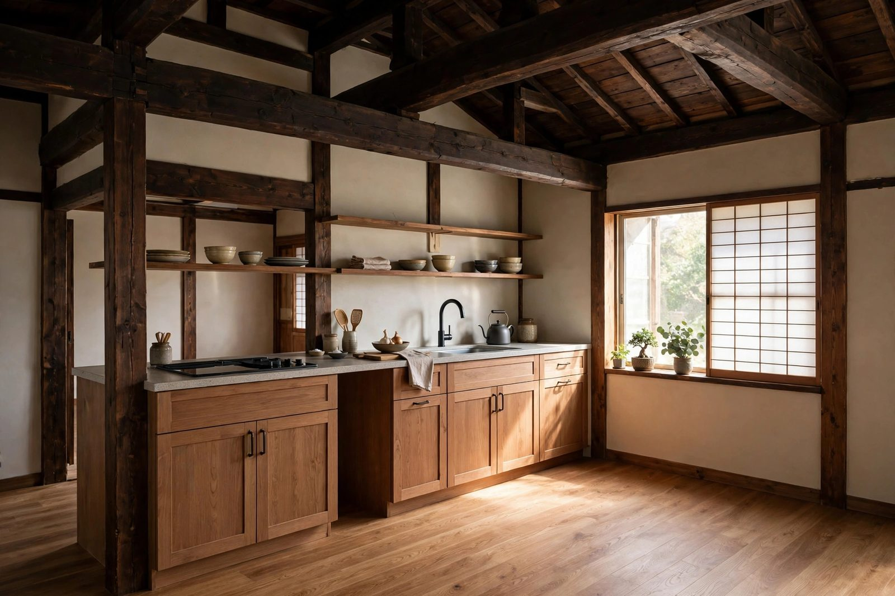
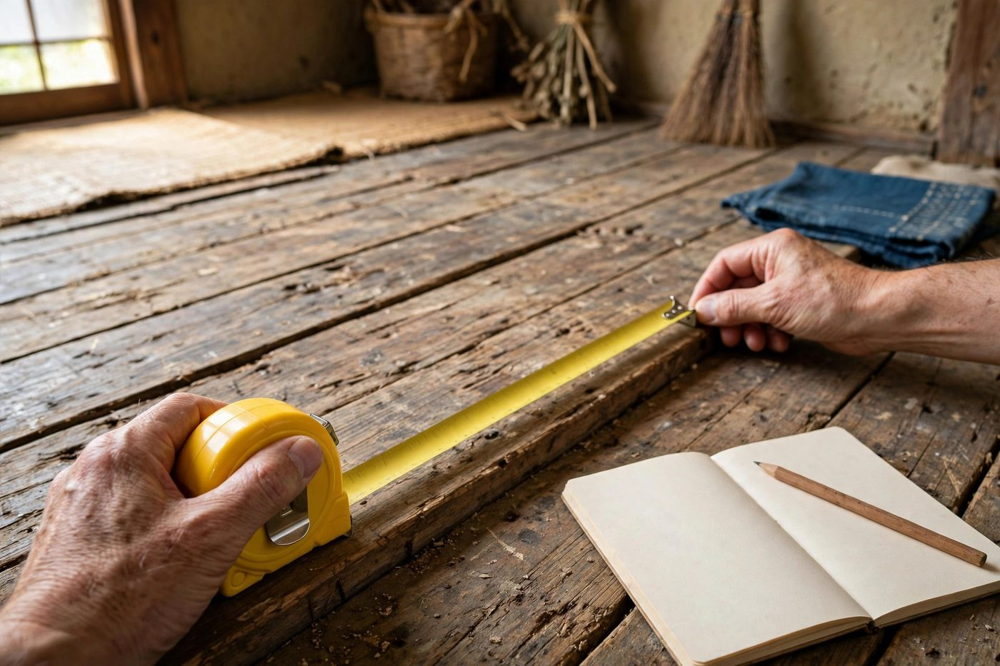
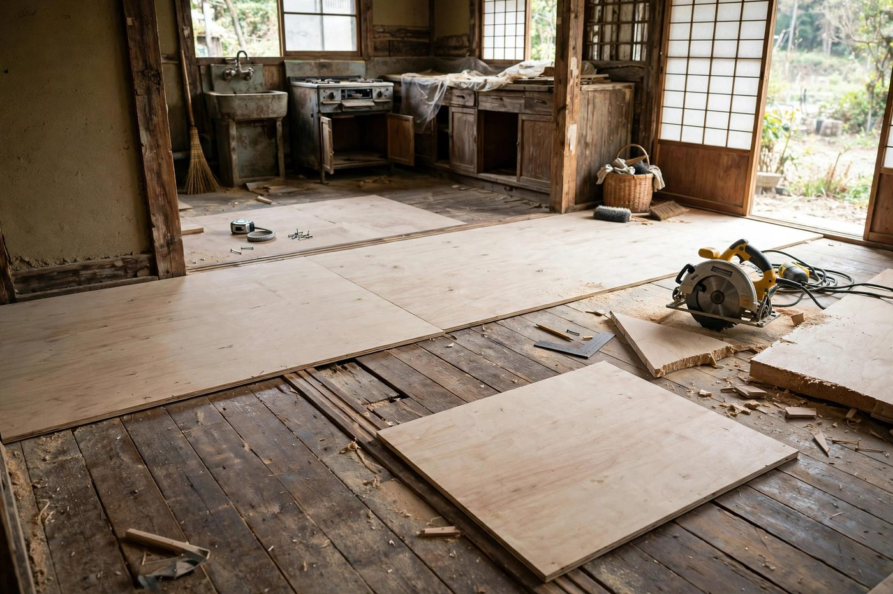
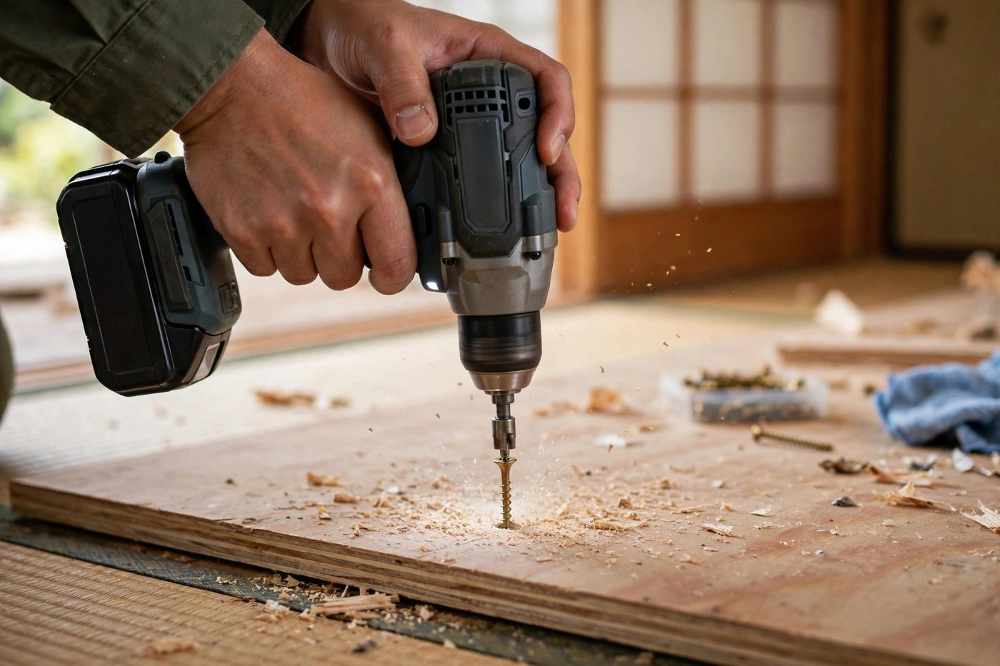
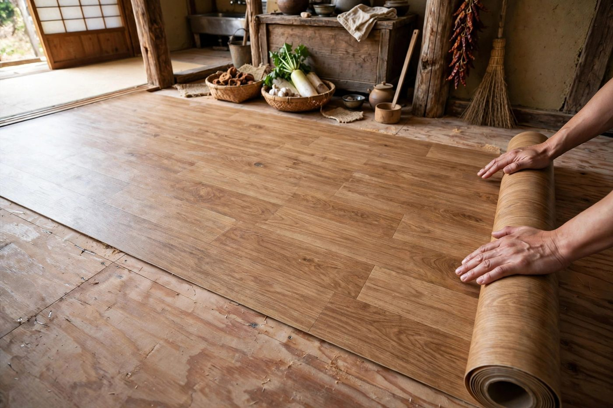
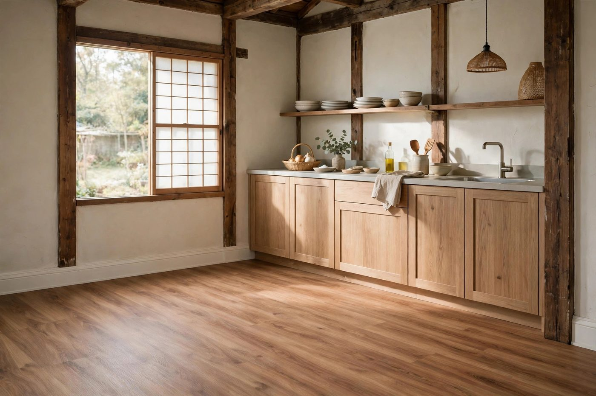

古民家の台所の床をDIYで張り替えた話｜合板＋クッションフロアの手順と道具

古民家の台所は、長年の湿気と使用で床が傷みやすい場所です。うちの台所も例外ではなく、思い切って自分で床を張り替えることにしました。方法は「既存の床の上に合板を増し張りして、その上にクッションフロアを敷く」という、古民家DIYでは定番のやり方です。この記事では、実際の手順と使った道具・材料、やってみて分かった注意点をまとめます。
なぜ合板＋クッションフロアなのか
- 既存の床を剥がさないので、廃材が少なく、作業が早い
- クッションフロアは水に強く、台所でも掃除がしやすい
- 材料費がフローリング材より安く済む
- 多少の床の凹凸を合板でならせる
デメリットは、床の高さが合板＋クッションフロアの分だけ上がること。ドアの下や敷居との段差は事前に確認が必要です。
使った材料・道具
- 構造用合板 12mm（床の下地用）
- クッションフロア（住宅用・水回り対応）
- クッションフロア用 両面テープ／接着剤
- インパクトドライバー（ビス止め用）
- 丸ノコ／ノコギリ（合板のカット用）
- カッター・定規・メジャー
同じ用途のものはAmazonでも探せます（PR）


手順
1. 床の状態確認と採寸
まず床の傷み具合を確認します。踏んで沈む場所がある場合は、下地（根太）の腐食も考えられるので、その部分は補強が先です。問題なければ、部屋の寸法を測って合板とクッションフロアの必要量を出します。

2. 合板をカットして仮置き
合板を部屋の形に合わせてカットし、一度全部並べて仮置きします。柱や配管の切り欠きは、この段階で合わせておくと後が楽です。合板同士の継ぎ目は、部屋の中央に来ないよう配置を工夫しました。

3. 合板をビス止め
仮置きで問題なければ、インパクトドライバーでビス止めします。ビスの間隔は外周と中央で均等に。打ちすぎると合板が浮くので、面がそろう程度に締めるのがコツです。

4. クッションフロアを敷く
クッションフロアは、まず部屋より少し大きめに切って仮置きし、半分ずつめくって両面テープ（または接着剤）で固定します。空気が入ったら、中央から外側へ押し出すように圧着。壁際の余分は、定規を当ててカッターで仕上げ切りします。

5. 仕上げ
壁との境目や継ぎ目を確認して完成。巾木がある場合は戻して、見た目を整えます。

やってみて分かった注意点
- クッションフロアは切る前に部屋の温度に慣らしておくと、伸縮でずらしにくい
- カッターの刃はこまめに替える。切れ味が悪いと仕上がりが荒れる
- 合板の仮置きを省略しない。ここで合わせを済ませると本作業が一気に楽になる
- 床が高くなる分、冷蔵庫などの大型家電の出し入れに支障がないか先に確認する
まとめ
合板＋クッションフロアの床リフォームは、古民家DIYの第一歩として取り組みやすい作業でした。業者に頼むより費用を抑えられますし、何より台所に立つのが気持ちよくなります。これから挑戦する方の参考になればうれしいです。